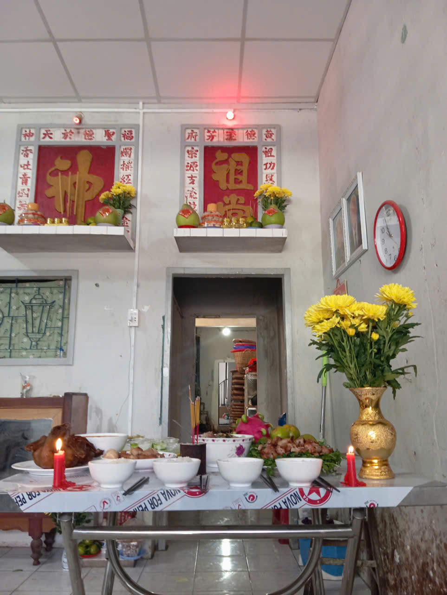
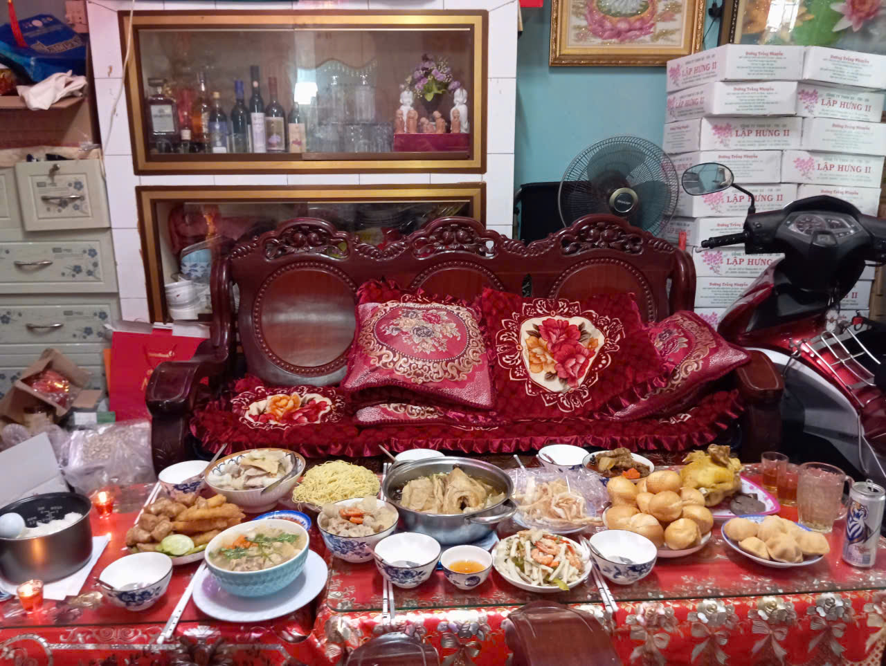

Sóc Trăng là vùng đất giao thoa văn hóa của ba dân tộc Kinh – Khmer – Hoa,
là một vùng đất yên bình với nhiều vùng nông thôn, trải dài ruộng lúa,
những ngôi chùa bóng mát cổ kính, nổi danh, nhưng một khi đã nói đến Sóc
Trăng thì không thể thiếu những đặc sản, ẩm thực phong phú ở nơi đó, là sự
kết hợp của không chỉ một mà 3 dân tộc Việt Nam với truyền thống lâu dài,
chính vì vậy. Sự kết hợp ẩm thực của cả 3 dân tộc đã tạo nên nhiều món ăn độc đáo
tại Sóc Trăng, dẫu vậy vẫn chỉ có một số ít món ăn có thể nằm trên bàn ăn giữa những ngày Tết
những món ăn truyền thống với hương vị đã in sâu vào tiềm thức của mỗi người dân Sóc Trăng.
🥮 Bánh truyền thống quê hương
1. Bánh tét
Bánh tét là món không thể thiếu trên mâm ăn ngày Tết, không chỉ ở riêng quê em,
mà còn là biểu tượng cho truyền thống tốt đẹp lâu dài của đất nước Việt Nam ta
. Bánh tượng trưng cho sự đủ đầy, gắn kết gia đình, thường được làm bởi những thành
viên trong gia đình, tụ họp về để gói bánh, dẫu quê em không có phong tục gói bánh
này, nhưng bánh tét vẫn sẽ luôn nằm trên bàn ăn năm mới.
1.1. Bánh tét truyền thống
Để làm nên chiếc bánh tét truyền thống, người ta chọn nếp ngon( thường là nếp cái hoa vàng) vo sạch, ngâm với nước lá dứa để tạo màu và hương thơm tự nhiên.
Nhân bánh gồm đậu xanh nấu chín, thịt ba chỉ ướp gia vị vừa ăn, sau đó gói chặt bằng lá chuối và buộc lạt tre cẩn thận. Quy trình
làm bánh yêu cầu không chỉ sự tỉ mỉ mà còn sự kiên nhẫn của người làm, vì để làm được một chiếc bánh Tét ngon phải mất rất nhiều giờ
, có thể trên cả nửa ngày làm bánh. Bánh được nấu suốt nhiều giờ liền trên bếp lửa, thể hiện sự kiên nhẫn của người nấu và tinh thần
sum vầy của gia đình trong ngày Tết.
Bánh Tét nhân đậu – một món ăn truyền thống khác không kém cạnh.
1.2. Bánh tét nhân đậu
Để nấu bánh Tét nhân đậu xanh, trước hết cần chuẩn bị gạo nếp vo sạch, ngâm qua đêm cho hạt nở mềm. Đậu xanh được hấp chín, giã nhuyễn rồi trộn với đường để làm nhân.
Lá chuối rửa sạch, hơ qua lửa cho dẻo, sau đó trải ra, cho lớp nếp vào, đặt nhân đậu xanh ở giữa rồi gói chặt thành hình trụ dài. Bánh được buộc bằng dây lạt, xếp vào
nồi lớn, đổ nước ngập và nấu liên tục trong nhiều giờ cho đến khi nếp chín dẻo, nhân thơm bùi. Khi bánh chín, để ráo, cắt thành từng khoanh tròn, ta sẽ thấy lớp nếp
trắng ngần ôm lấy nhân vàng óng, vừa đẹp mắt vừa ngon miệng.
Bánh Tét nhân đậu – một món ăn truyền thống khác không kém cạnh.
2. Bánh pía Sóc Trăng
Đã luôn là một món ăn đặc sản nổi tiếng của Sóc Trăng, bánh Pía không chỉ là
biểu tượng trong văn hóa của Sóc Trăng mà còn là một món ăn không thể thiếu trong
ngày Tết, mang ý nghĩa sung túc và tròn đầy. Bản thân ba em cũng là một thợ làm
bánh, vì vậy bánh Pía mang rất nhiều ý nghĩa với riêng em.
2.1. Bánh Pía sầu riêng
Là loại bánh Pía chuyên dụng nhất trong ngày Tết ở quê em, quá trình làm bánh Pía tương đối phức tạp, do
hương vị bánh Pía sẽ tùy thuộc rất nặng nề vào khả năng khéo léo của người làm bánh, đòi hỏi, sự khả năng
làm việc kết hợp từ nhiều người, người đã nướng, người làm bột và người làm nhân, tương tự. Ý nghĩa của bánh
Pía không chỉ nằm ở hương vị mà còn ở giá trị văn hóa, bánh tượng trưng cho sự đoàn kết, gắn bó và tinh hoa
của nhiều cộng đồng cùng sinh sống tại Sóc Trăng.
Bánh Pía sầu riêng – món ăn truyền thống tại quê em.
2.2. Bánh Pía nhân khoai môn
Không được chuyên dụng như bánh Pía sầu riêng nhưng đôi lúc bánh Pía nhân khoai môn vẫn có mặt trên những mâm cúng ngày Tết.
So với bánh Pía sầu riêng, quy trình làm bánh Pía nhân khoai môn lại có phần đơn giản hơn, dẫu vậy, giá trị tinh thần và hương
vị của bánh cũng sẽ không phai nhạt, bánh tượng trưng cho sự đầy đủ và sung túc, là lời chúc phúc gởi gắm đến các thành viên, người thân
trong gia đình.
Bánh Pía nhân khoai môn – đậm đà hương quê.
🍖 Món mặn – món ngọt ngày Tết
Món mặn
Trong mâm cơm ngày Tết của người Việt, bên cạnh những món ngọt hay món ăn chơi, các món mặn luôn giữ vai trò quan trọng, tạo nên sự cân bằng hương vị và thể hiện nét đặc trưng của ẩm thực truyền thống.
Những món mặn thường thấy có thể kể đến thịt kho tàu, cá kho, vịt và heo quay, giò chả,.... Mỗi một món đều mang một ý nghĩa riêng: thịt kho tàu và cá kho, hai món ăn dân dã trong các hộ gia đình, gợi nhắc đến
sự đong đầy ngày Tết, còn vịt hay heo quay thường được dâng cúng tổ tiên để cầu mong may mắn, là hai món ăn nổi bật trên bàn ăn, như thể nhấn mạnh cho sự đặc biệt ngày Tết.
1.1. Thịt kho trứng
Một món ăn mặn không chỉ quen thuộc trên bàn tết, mà trên mâm ăn mỗi ngày của các gia đình Việt Nam, hoặc ít nhất là ở quê em,
thịt kho trứnglà một món ăn gợi nhớ đến những ngày Tết sum họp, mà còn những ngày bình dị, đơn giản quê em, một món
ăn mang ý nghĩa tượng trưng cho sự sung túc, trọn vẹn trong năm mới. Trong những ngày đầu xuân, bát cơm trắng ăn kèm thịt kho
trứng nóng hổi luôn khiến không khí gia đình thêm phần ấm cúng và gắn kết. Chính vì thế, món ăn này không chỉ là một phần của
ẩm thực Tết mà còn là một phần ký ức, một nét đẹp văn hóa truyền thống được gìn giữ qua nhiều thế hệ ở quê em.
Thịt kho trứng - món ăn hương vị ngày Tết quê em.
1.2. Vịt quay
Hai món ăn này không chỉ hấp dẫn về hương vị mà còn mang ý nghĩa văn hóa sâu sắc. Vịt quay tượng trưng
cho sự thịnh vượng, đong đầy ngày Tết, món vịt quay không chỉ thường nằm trên bàn ăn ngày Tết mà còn nhiều dịp khác
tại quê em, lễ cưới, đám giỗ,... món ăn như thêm tô đậm cho sự đặc biệt của những dịp Tết, làm cho những ngày
họp mặt ấy như thể thêm sum vầy, đầy đủ.
Vịt quay - món ăn tượng trưng cho sự viên mãn, sung túc.
Món ngọt
Tương tự, trên mâm cơm ngày Tết, bên cạnh những món ăn mặn thì không thể thiếu vắng những món ngọt,
sự kết hợp của hai món mang lại sự hài hòa và tạo không khí vui tươi. Những món ngọt thường thấy trên
bàn ăn quê em có thể kể đến mứt dừa hay các loại chè hoặc bánh in. Mỗi món đều mang hương vị đặc trưng,
và ý nghĩa của riêng nó.
1.1. Bánh bông lan
Là một món ngọt thường thấy trên bàn cúng quê em, dẫu bản thân là một món ăn dân dã, chè đậu xanh vẫn được xem
là một trong những bữa ăn cần có trên mâm cúng, đây là một món ăn rất quen thuộc, đặc biệt trong gia đình em, vì
ông bà em rất ưa chuộng món ăn này, nên mọi năm bánh bông lan sẽ luôn nằm trên măm cúng những ngày lễ để thể hiện lòng
biết ơn, tôn trọng đối với ông, bà em.
Bánh bông lan - tượng trưng cho sự cảm kích với ông bà em.
1.2. Bánh In trắng
Bánh in là một loại bánh truyền thống mang đậm nét văn hóa dân gian Việt Nam, thường xuất hiện trong các dịp lễ Tết,
Tết Trung Thu, tuy bánh In không thường xuất hiện nhiều như bánh Chưng hay bánh Tét trong ngày Tết, nhưng bánh. Ý nghĩa của bánh in không chỉ nằm ở hương vị mà còn ở giá trị tinh thần. Ở quê em bánh tượng trưng cho
sự sung túc, viên mãn và may mắn, thường được dùng để dâng cúng tổ tiên trong ngày Tết hoặc làm quà biếu để gửi gắm lời
chúc phúc đến người thân, bạn bè. Đây cũng là một trong những loại bánh mà ba em thường làm.
Bánh In trắng - một món ăn truyền thống lâu đời.
🎁 Ý nghĩa ẩm thực ngày Tết 🍝
Ý nghĩa


Ẩm thực ngày Tết quê em mang nhiều ý nghĩa sâu sắc, không chỉ đơn thuần là món ăn mà còn là biểu tượng văn hóa và tinh thần đoàn tụ ngày lễ,
mâm cỗ Tết với những món truyền thống như bánh chưng, bánh tét, thịt kho, vịt và heo quay,… thể hiện sự biết ơn tổ tiên, cầu mong một năm mới no
đủ, sung túc. Mỗi món ăn đều gắn liền với triết lý sống: bánh chưng, bánh tét tượng trưng cho đất trời và sự hòa hợp; thịt kho trứng(tàu) mang
ý nghĩa sum vầy, trọn vẹn, mứt Tết gợi nhắc đến sự ngọt ngào, may mắn. Từ Bắc đến Nam, ẩm thực ngày Tết là bức tranh đa sắc màu, vừa lưu giữ
truyền thống vừa tạo nên sự gắn kết gia đình, nụ cười trên khuôn mặt mọi người.